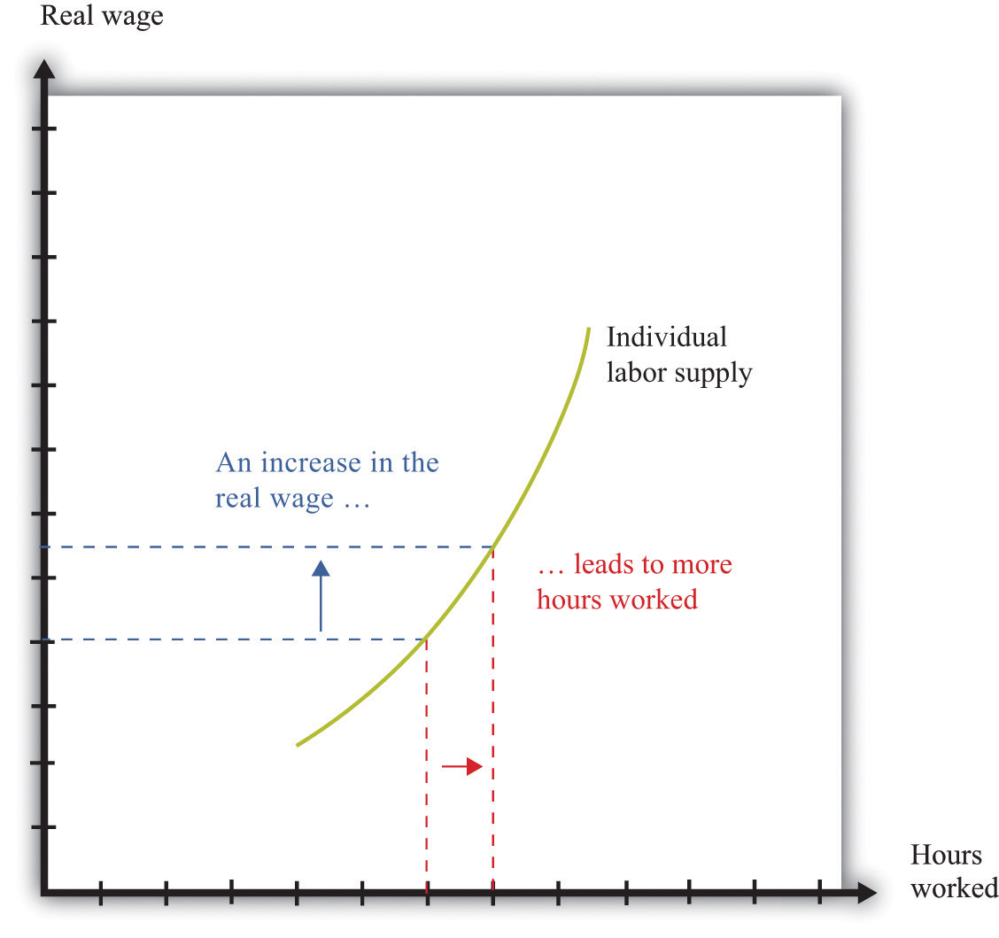

Some economic decisions, like how to spend your money and your time, are everyday decisions.See Chapter 4 "Everyday Decisions" for more discussion. There are also bigger and more difficult economic decisions that you confront only occasionally. In the months and years after graduation, you will face major life choices, such as the following:
These economic choices are more complicated than choosing how many chocolate bars to buy or how much time you should spend watching television today.
Two things make these decisions hard. First, there is the element of time—not the 24 hours in a day, but the fact that you must make decisions whose consequences will unfold over time. In choosing an occupation, deciding on graduate school, or picking a portfolio of financial assets, you must look ahead. Second, there is the element of uncertainty. Will you be healthy? Will you live to an old age? Will you succeed as a rock musician? The future is unknown, yet we cannot ignore it. The future is coming whether we like it or not.
We cannot tell you whether you should buy a new car or if you will be a rock star. But we can give you some tools that will help you when you are making decisions that involve time and uncertainty. In this chapter we tackle the following questions:
The chapter is organized around the two themes of time and uncertainty. We begin with a brief review of the choice between two goods at a given time.This decision is analyzed at length in Chapter 4 "Everyday Decisions". Then we look at choices over time. Economists typically assume that individuals are capable of choosing consistently among the bundles of goods and services they might wish to consume. The ability to make such a choice is perhaps not too onerous in the case of simple choices at a given time (such as whether to go to a movie or go to dinner). It is more difficult when we consider choices over a broad range of goods from now into the future.
We tackle time and uncertainty separately. To begin with, we will suppose that the future is known with certainty. This allows us to focus on including time in our analysis of economic decision making. We begin with a discussion of the choice between consumption and saving and explain how this decision is affected by changes in interest rates. We then look at problems such as how to choose an occupation. A major part of this analysis is an explanation of how to compare income that we receive in different years.
We then turn to uncertainty. We explain the idea of risk and then discuss the kinds of risks you cannot avoid in life. We explain how insurance is a way to cope with these risks. We also discuss uncertainties that we create in our lives—through occupational choice, portfolio choice, and gambling.
Your choice at any given time between two goods—say, chocolate bars and music downloads—reflects the tension between your desires for chocolate bars and downloads and your income, as summarized by your budget line. The budget line shows us the bundles of goods and services that you can afford, given prices and your income, under the presumption that you do not throw any money away. For an individual choosing between two goods only (chocolate bars and music downloads), the budget line states that total spending is equal to spending on chocolate bars plus spending on downloads:
(number of chocolate bars × price of a chocolate bar) + (number of downloads × price of download) = disposable income.Figure 5.1 "The Budget Line with Two Goods" displays the budget line for the choice between downloads and chocolate bars.
Toolkit: Section 31.1 "Individual Demand"
You can review the derivation and meaning of the budget line in the toolkit.
Figure 5.1 The Budget Line with Two Goods

This diagram shows the budget line for an individual choosing between chocolate bars and music downloads. The slope of the budget line reflects the rate at which an individual can trade off the two goods.
The slope of the budget line is
As you move along the budget line, you are giving up downloads to get chocolate bars. If you give up one chocolate bar, you get an amount of money equal to the price of a chocolate bar. You can take this money and use it to buy music downloads. You have to divide this amount of money by the price of a download to determine how many downloads you can buy. The slope of the budget line reflects the opportunity cost of chocolate bars in terms of music downloads.
Now think about what the budget line looks like when we are choosing between now and the future. Just as we find it easier to think about the choice between two goods rather than among 2,000 goods, so too is it easier to think about the choice over only two periods of time. We call these two periods “this year” and “next year.” There is nothing special about the two-period example beyond the fact that it makes it easy to draw diagrams and see what is going on. The principles that we uncover for this case also apply to decisions made with more than two time periods in mind.
We also do not worry about all the different goods and services that are available, preferring instead to talk in general about consumption this year and consumption next year. We aggregate together all the different products that we consume. Thus “consumption” means the bundle of goods and services people consume. This consumption also has an associated price, which we call the price levelA measure of average prices in an economy.. Think of this as the average price of goods and services in the economy. If you find it easier, imagine there is a single good, like chocolate bars, that you consume, and think of the price level as simply being the price of a chocolate bar.
If you choose not to spend all your income on consumption this year, you are saving. When you save, you can put your money into a financial institution and earn interest on it. Suppose you have $100 this year that you save by putting it in a bank. You are then lending to the bank—saving and lending are really the same thing. The bank acts as an intermediary, taking your $100 and giving it to someone else who borrows from the bank.
The bank offers you interest on this loan—for example, it may pay a nominal interest rateThe rate at which individuals and firms in an economy can save or borrow. of 5 percent per year. After a year, your bank account will contain your original $100, plus an extra 5 percent. Because 5 percent of $100 is $5, you earn $5 worth of interest. We talk about interest rates in percentage terms, but you should remember that a percentage is simply a number. For example, 5 percent is 0.05, and 20 percent is 0.2. The nominal interest rate is the interest rate at which individuals and firms in the economy can save or borrow.There are actually many different interest rates in an economy. Chapter 10 "Making and Losing Money on Wall Street" looks at some of these. Here, we simplify the process by supposing there is only one interest rate. It is called a nominal interest rate because it is measured in monetary terms. Most interest rates are quoted on an annual basis, meaning that they specify the amount earned per year.
Of course, if you put a $100 in the bank for one year, then next year you will still have the original $100 as well as the interest you earned. At an interest rate of 5 percent, $100 this year is worth $105 next year. To calculate the total amount of money that you can earn, we simply add one to the nominal interest rate, giving us the nominal interest factorA factor, equal to 1 + the nominal interest rate, used to convert dollars today into dollars next year.:
nominal interest factor = 1 + nominal interest rate.The nominal interest factor is used to convert dollars today into dollars next year.
Toolkit: Section 31.6 "The Credit Market"
The nominal interest rate is the rate at which individuals and firms in the economy can save or borrow. The nominal interest factor is 1 + the nominal interest rate.
In this chapter, we typically use the nominal interest factor rather than the nominal interest rate because it makes the equations easier to understand. Just keep in mind that it is easy to move back and forth between the interest rate and the interest factor by adding or subtracting one.
If you have $100 today, then tomorrow it will be worth $100 × the nominal interest factor. In general,
z this year will be worth z × the nominal interest factor next year.Armed with this idea of the nominal interest factor, we can graph the budget line for a two-period consumption-saving problem. Figure 5.2 "The Budget Line with Two Periods" shows consumption this year on the horizontal axis and consumption next year on the vertical axis. To discover what the budget line looks like, we first determine its slope and then its position.
Figure 5.2 The Budget Line with Two Periods

This diagram shows the budget line for an individual choosing consumption over time. The slope of the budget line depends on the price level this year, the price level next year, and the nominal interest factor (= 1 + nominal interest rate). Suppose the price level this year is $9, the price level next year is $10, and the nominal interest rate is 20 percent. Then the slope of the budget line is −(9/10) × 1.2 = −1.08. This means that if you give up 1 unit of consumption this year, you can get 1.08 units next year.
The slope of the budget line tells you how much extra consumption you will get next year if you give up a unit of consumption this year. So to determine the slope of the budget line, we use the following thought experiment.
Next year, you can take these funds and purchase
units of consumption.
So the slope of the budget line is as follows:
We show the budget line in Figure 5.2 "The Budget Line with Two Periods".
The budget line has a negative slope because—as with the choice between chocolate bars and downloads—you must give one thing up to get another. If you want to consume more in the future, you must be willing to consume less right now. If you want to consume more now, you will have to sacrifice consumption in the future.
The slope of the budget line depends not only on the nominal interest factor but also on prices this year and next year. Suppose the price of a unit of consumption this year is $100 and next year it is $110. Economists call the percentage increase in the price level the inflation rateThe rate at which the overall price level in an economy is growing.; it is calculated as follows:
Put differently, it is the rate of growth of the price level. In our example, the inflation rate is 10 percent.
Now suppose the nominal interest rate is also 10 percent, which means that the nominal interest factor is 1.1. Then
In this case, the price level increased by 10 percent, from 100 to 110. But the nominal interest rate also increased by 10 percent, which offset the increase in prices. We see that the slope of the budget line depends on both the nominal interest factor and the rate of inflation. In fact, it depends on the real interest factorA factor, equal to 1 + the real interest rate, that allows you to convert units of goods and services this year into units of goods and services next year.:
slope of budget line = −(1 + real interest rate) = −real interest factor.Toolkit: Section 31.6 "The Credit Market"
The real interest rate is the rate of interest adjusted for inflation. It tells you how much you will get next year, in terms of goods and services, if you give up a unit of goods and services this year. The real interest factor allows you to convert units of goods and services this year into units of goods and services next year. The real interest factor is 1 + the real interest rate.
As you move along the budget line in Figure 5.2 "The Budget Line with Two Periods", you are giving up chocolate (consumption) this year for chocolate next year. So the slope of the budget line must be a number, not a dollar amount. Because this year’s price and next year’s price are both denoted in dollars, their ratio is a number. Likewise, the interest rate is a number, so the slope of the budget line is indeed a number.
An example may help you understand the difference between the nominal interest rate and the real interest rateThe rate of interest adjusted for inflation.. Suppose you go to your bank and get a one-year, $20,000 loan to buy a car, with a nominal interest rate of 5 percent. Your contract with the bank thus stipulates that you must pay the bank $21,000 at the end of the year. If the inflation rate is zero, then the cost of borrowing measured in terms of real goods and services is $1,000, which is 5 percent of the amount that you borrowed. But if the inflation rate is 5 percent, then the $21,000 you pay to the bank at the end of the loan buys the same amount of goods and services that the $20,000 the bank lent to you. In this case, you are effectively able to borrow for free.
Good decisions about borrowing and lending are based on real interest rates rather than nominal interest rates. Your cost of borrowing to buy the car is not the monetary payments you make on the loan but rather the value of the goods and services you could have purchased with that money. So we need a way to convert from the commonly observed nominal interest rate to a measure of real interest rates. We do this by using a formula for the real interest rate that was discovered by a famous economist named Irving Fisher.
Toolkit: Section 31.8 "Correcting for Inflation"
The Fisher equation is a formula for converting from nominal interest rates to real interest rates, which is as follows:
real interest rate ≈ nominal interest rate – inflation rate.Equivalently,
real interest factor ≈ nominal interest factor – inflation rate.For example, suppose the nominal interest rate is 5 percent. If the rate of inflation is zero, then the real interest rate is 5 percent. But if the rate of inflation is 4 percent, the real interest rate is only 1 percent. The Fisher equationA formula for converting from nominal interest rates to real interest rates: the real interest rate equals the nominal interest rate minus the inflation rate. is a tool that tells us how to convert nominal interest rates—the interest rates you see in the newspapers and on television—into real interest rates, which are key for decision making.The precise formula is as follows:This equation is, to a very good approximation, the same as the one in the text.
Whereas the slope of your budget line depends on the real interest rate, the position of your budget line depends on how much income you have. When you have more income, the budget line is further away from the origin. One way to determine the position of the budget line is by looking at its intercepts. The horizontal intercept is the amount you can consume this year if you spend all of this year’s income and borrow against your entire future income. The vertical intercept is the amount you can consume next year if you choose to consume nothing this year and save all of your current income.
It is easier and more instructive, however, to look at a different point on the budget line. Remember that the budget line is the bundles of consumption you can just afford. One bundle you can certainly afford is the bundle where you spend all of this year’s income on consumption this year and all of next year’s income on consumption next year. In other words, one available option is that you neither save nor borrow. In this case,
and
On the right-hand side of these equations, we divided dollar income by the price level to give us real income (that is, income measured in terms of purchasing power). We must do this to find out how much you can consume in terms of goods and services.
For example, suppose your nominal income this year is $23,000, and your nominal income next year is $24,200. Suppose the price level this year is $10 and the price level next year is $11. This means that
and
So one possible consumption choice, as shown in Figure 5.3 "Determining the Position of the Budget Line", is 2,300 units of consumption this year and 2,200 units of consumption next year. In this case, you are neither borrowing nor saving. Of course, you might choose some different point on the budget line. Figure 5.3 "Determining the Position of the Budget Line" shows that your real income this year and next year does indeed pick out a point on the budget line. And because we already know the slope of the budget line, we are done; we can now draw the budget line.
Figure 5.3 Determining the Position of the Budget Line

The position of the budget line depends on income this year and next year. We know that one possible choice of consumption is where the consumer neither saves nor borrows. This means that the budget line must pass through this point.
Your budget line describes the condition that total spending equals total income. This is true for the choice about the consumption of downloads and chocolate bars, and it is also true for the choice over time. But once we move to two periods, we must be careful about measuring both total income and total spending.
Suppose you earn some income this year (say, $23,000) and will earn some more next year (say $24,200). What is your income for these two years together? Your first instinct is probably to add the income in the two years and say $47,200. Superficially this makes sense—after all, income is measured in dollars in both years. Unfortunately, this is not a very good way to add money over time. It is flawed because it views income in two different years as if they are the same thing. In fact, money this year and money next year are not the same.
Imagine that a friend asks to borrow $1,000 from you today, promising to pay you back the $1,000 twenty years from now. Would you be likely to agree to this? Even if you trust your friend completely, the answer is surely no. After all, you could take your $1,000 and put it in the bank for twenty years, and the bank will pay you interest on your money—that is, the bank is willing to pay you for the privilege of using your money. Over twenty years, you could earn quite a bit of interest. By contrast, your friend is asking for a zero-interest loan in which no interest is paid on the money that you lend.
Positive interest rates mean that a dollar today and a dollar in the future are not worth the same. Adding dollars in one year to dollars in another year makes no more sense than adding apples and oranges. We need to convert dollars next year into their value right now. Remember that
z this year will be worth z × the nominal interest factor next year.We can turn this around. If the interest rate is 5 percent, then $105 next year will be worth only $100 this year. A dollar next year is worth dollars this year. This is the most you would be willing to give someone this year if he or she promised to give you a dollar next year. You would not give them more than this because you would lose money relative to the alternative of putting the dollar in the bank and earning interest. More generally,
Toolkit: Section 31.5 "Discounted Present Value"
Unless the interest rate is zero, a dollar this year is not the same as a dollar a year from now. To avoid this problem, economists use discounted present value as a device for measuring flows that occur over time. Discounted present value tells you the value of something you will receive in the future, discounted back to the present.
For example, if we want to add income in dollars over two years, the discounted present valueA technique that allows us to compare the value of sums of money received at different dates. of such a two-year flow of income is given by the following formula:
This is the income term that we need for the budget line in our two-year example. Go back to our earlier example, where income this year is $23,000 and income next year is $24,200, and the nominal interest factor is 1.1. Then
Even though income next year is higher in dollar terms, it is lower in terms of present value: $24,200 next year is worth only $22,000 today. Notice that when we measure the discounted value of a flow of nominal income, we still end up with a nominal value—the value of the income flow in terms of this year’s dollars.
Table 5.1 "Discounted Present Value of Income" provides another illustration: it shows the calculation of the discounted present value of income when this year’s income is $100 and next year’s income is $200. You can see that, as the interest rate increases, the discounted present value of income decreases.
Table 5.1 Discounted Present Value of Income
| Nominal Income This Year ($) | Nominal Income Next Year ($) | Discounted Present Value of Nominal Income Flow ($) | ||
|---|---|---|---|---|
| Nominal Interest Rate | ||||
| 0% | 5% | 10% | ||
| 100 | 200 | 300.00 | 290.47 | 281.82 |
| 250 | 500 |
When we want to add consumption spending this year and next year, measured in dollars, we use exactly the same logic as we did when adding income. Nominal consumption this year and next are given as follows:
nominal consumption this year = price level this year × consumption this yearand
nominal consumption next year = price level next year × consumption next year.(Again, if you find it easier, just think of this as chocolate: total spending is the number of chocolate bars purchased times the price per bar. When we talk about “consumption,” we mean something measured in real units, such as chocolate bars. When we talk about “nominal consumption,” we are referring to a value measured in dollars.) Just as it is incorrect to add this year’s and next year’s income, so too should we not add together nominal consumption. Instead, we must calculate a discounted present value, exactly as we did before.
As with income, the discounted present value of nominal consumption is measured in this year’s dollars.
Earlier, we emphasized that people think about the real interest factor when they are comparing this year and next year. Yet in calculating the discounted present value of income and consumption spending, we are using the nominal interest factor. What is going on?
The rule for determining which interest factor to use in a discounted present value calculation is simple. If you are converting nominal values, then you should use the nominal interest factor. If you are converting real values, then you should use the real interest factor. So if you want to know how much a given number of dollars in the future will be worth in dollars today, you should use the nominal interest factor. This is the normal case for most calculations that you would do. However, if you want to calculate a discounted present value for variables that have already been corrected for inflation, you must use the real interest factor. In this case, the answer you get is also a real quantity.
The tool of discounted present value gives us another way of thinking about the two-period budget line—the condition that
discounted present value of two-year flow of nominal consumption = discounted present value of two-year flow of nominal income.Remember that both sides of this equation are measured in terms of this year’s dollars. If we were to divide both sides of this equation by this year’s price level, then we would get the equivalent expression in real terms:
discounted present value of two-year flow of consumption = discounted present value of two-year flow of real income.In this case, as we just explained, the discounting must be done using the real interest factor instead of the nominal interest factor.
Given your budget line, we suppose you choose a combination of consumption this year and next year that makes you as well off as possible. An example of such a preferred point is indicated in Figure 5.4 "The Preferred Point".
Figure 5.4 The Preferred Point

The consumer’s preferred point must lie somewhere on the budget line. In this example, the consumer is choosing to consume in excess of his income this year. The consumer must borrow against future income, which means that consumption next year will be below next year’s income.
The choice of a preferred point reflects two ideas. Whatever your tastes between consumption in the two years, we presume that you will not throw any income away. As a result, your choice will be on, not inside, the budget line. Further, if you choose well, according to your preferences, then you will pick the best combination of consumption; there is no other point on the budget line that you prefer.
Your preferred point implies a choice about how much saving or borrowing you do. Figure 5.5 "Consumption and Saving" shows two possible cases. In part (a) of Figure 5.5 "Consumption and Saving", you are a saver: you are consuming less than your income this year. The difference between your income and your consumption is the amount of your savings. Those savings, plus interest, are available to you next year, so next year you can consume in excess of your income. In part (b) of Figure 5.5 "Consumption and Saving", you are a borrower: you are consuming more than your income this year. When you borrow this year, you must repay the loan with interest next year, so your consumption next year is less than your income.
Figure 5.5 Consumption and Saving

(a) The individual is a saver this year. (b) The individual is a borrower this year.
The budget line tells you the rate at which the market allows you to substitute goods between this year and next year. This is distinct from your personal tastes about consuming this year or next year. The saver in part (a) of Figure 5.5 "Consumption and Saving" is a relatively patient person: she is willing to give up a lot of consumption this year to be able to consume more next year. The borrower in part (b) of Figure 5.5 "Consumption and Saving" is a relatively impatient person: he wants to consume a lot this year and is willing to sacrifice a great deal of future consumption.
You will sometimes hear discussions of how much individuals like to “discount the future.” This is a statement about their tastes. Someone who discounts the future a great deal is impatient. Such a person wants to consume right away, so he will give up a lot of future consumption to have more today. Someone who discounts the future only a little is patient. Such a person is willing to give up consumption today even if she gets only a little extra consumption in the future. Economists pass no judgment on whether it is better to be impatient or thrifty. These are matters of personal preference.
Interestingly, the timing of your income turns out not to matter for your choice of consumption, which is illustrated in Figure 5.6 "The Timing of Income".
Figure 5.6 The Timing of Income

The timing of income is irrelevant to the consumption choice. Here, one individual has low income this year and high income next year, while the opposite is true for the other individual. However, the discounted present value of income is the same in both cases. If they both have the same tastes, they will choose the same consumption point.
Suppose that the nominal interest rate is 10 percent and that the price level is $10 in both periods. This means that the inflation rate is zero, so—from the Fisher equation—the real interest rate is also 10 percent. Now imagine that there are two individuals who have identical tastes. One of them earns income of $40,000 this year and $22,000 next year, so real income (nominal income divided by the price level) is therefore 4,000 this year and 2,200 next year. The other person earns $20,000 this year and $44,000 next year, yielding a real income of 2,000 this year and 4,400 next year. Both of these individuals share the same budget line (see Figure 5.6 "The Timing of Income"). This is because the discounted present value of their nominal income is the same: $60,000. (Check to make sure you understand why this is true.) For example, suppose that the preferred point of both individuals is to consume the same amount in each year. Then they can both consume approximately 3,143 units of consumption in each period.
Let us see how this works. Because the price level is $10, this amount of consumption costs $31,430 in each period. The first individual takes her income of $40,000 and saves $8,570 by putting it in the bank. This saving earns 10 percent interest, so she gets an additional $857. She thus has income in the following year equal to $22,000 + $8,570 + $857 = $31,427. This allows her to buy 3,142.7 units of consumption goods. The second individual needs to borrow $11,430 to add to his income this year. Next year, he must repay this amount plus 10 percent interest (that is, another $1,143). So his income next year is $44,000 − $11,430 − $1,143 = $31,427. So one individual must save to reach her preferred consumption bundle, while the other must borrow to reach his. Yet because they have the same discounted present value of income and the same tastes, they will consume the same bundle of goods.
Keep in mind that our discussion so far ignores uncertainty. We assumed that both individuals know their current and future income with certainty. Just as importantly, we have supposed that a bank is confident that the borrower will have sufficient income next year to repay the loan. In a world of uncertainty, we do not know for sure how much money we will have next year, and lenders worry about the possibility that people might not make good on their loans. Later in the chapter, we explain more about decision making in an uncertain world.
So far, we have worked everything out in terms of a two-period example. The two-period budget constraint tells us how income and consumption are linked over time. In reality, of course, you make these decisions with longer time horizons, and you can save or borrow for multiple years. But the same fundamental insight holds. If you save this year, then you will have extra resources to spend at some future date. If you borrow this year, then you will have to repay that loan sometime in the future, at which time you will have fewer resources to spend.
Toolkit: Section 31.4 "Choices over Time"
Individuals face a lifetime budget constraint. They can save in some periods of their lives and borrow (not save) in other periods. Over the course of any individual’s lifetime, however, income and consumption spending must balance. (If you begin life with some assets [for example, a bequest], we count this as part of income. If you leave a bequest when you die, we count this as part of consumption.) The lifetime budget constraint is as follows:
discounted present value of lifetime consumption = discounted present value of lifetime income.Again, it is important to be consistent in calculating the discounted present values in this expression. We have written the equation in terms of (real) consumption and (real) income, which means that the real interest factor must be used for discounting. An alternative is to measure both consumption and income in nominal terms and then use the nominal interest factor for discounting. There is a useful special case where real interest rates are zero, in which case it is legitimate simply to add income and consumption in different years. Thus the lifetime budget constraintThe discounted present value of lifetime consumption must equal the discounted present value of lifetime income. becomes
total lifetime consumption = total lifetime income.Although the principles of decision making are the same whether we are thinking about 2 months, 2 years, or an entire lifetime, it is obviously harder to make decisions over a 30-year horizon than over a 30-day horizon. One reason is that, over longer time horizons, we are more likely to face uncertainty. We don’t know what our income will be 30 years from now, and we don’t know our tastes. But even without that uncertainty, we may not always make good decisions.
In particular, economists and psychologists have discovered that we do not view choices involving the near future the same way as we view distant choices. For example, suppose an individual is given a choice between 1 cookie today or 2 cookies tomorrow. If he is impatient (or hungry), he is likely to choose the single cookie today. But if the same individual is given a choice between 1 cookie in 30 days or 2 cookies in 31 days, he or she may very well choose the 2-cookie option. Yet after 30 days have gone by, that person will be confronting the earlier decision, wishing that he or she could have the 2 cookies today.
Another way of saying this is that our decisions are not always consistent over time: our future selves may wish that our current selves had displayed more self-control. For example, we may choose to consume a lot today—instead of saving—and then regret that decision when we are older. Indeed, people often engage in tricks to get around their lack of self-control. For example, some people have a separate bank account for their savings, so they are less tempted to spend that money. Governments also take actions that compensate for our lack of self-control. Social security is in some ways a “forced saving” scheme: the government takes money from us when we are working but pays us money when we are retired.
There is a new and exciting field of economics called “neuroeconomics” that tries to understand the processes in the brain that underlie economic decision making. This field, while still very much in its infancy, promises to help us understand why the economic theory of how we make choices often works well, and why it sometimes does not. Some recent research suggests that different brain processes may deliver conflicting messages when making choices over time. Some processes are deliberative, in line with the economic model, while others are more impulsive. It is likely that the next two decades will bring a much deeper understanding of how the brain makes decisions, perhaps leading to a richer theory of economic decision making.
Whenever the real interest rate changes, then the relative price of consumption this year and next year changes. As we already know, changes in the real interest rate can come from two different sources: changes in the nominal interest rate and changes in the inflation rate. (Look back at the Fisher equation for a reminder of this.) Figure 5.7 "An Increase in the Real Interest Rate" shows the effect of an increase in the real interest rate on your budget line. The budget line becomes steeper because the opportunity cost of consumption this year increases. Notice, though, that the point at which you just consume your income in each period is still on the budget line. This is the point at which you are neither saving nor borrowing. Thus no matter what the interest rate, this point is always available to you.
Figure 5.7 An Increase in the Real Interest Rate

A change in the real interest rate changes the slope of the budget line. At any real interest rate, however, it is possible to consume exactly one’s income. So the point corresponding to no saving or borrowing is always available, no matter what the real interest rate. An increase in the real interest rate therefore causes the budget line to become steeper and rotate through the income point.
Changes in relative prices lead to income and substitution effects. To understand the effect of an increase in the real interest rate, we must look at both effects.
Combining the income and substitution effects and following an increase in the interest rate, borrowers have an incentive to borrow less. The substitution effect encourages saving, while the income effect discourages saving. The overall effect is ambiguous.
The evidence suggests that most people are like the individual in Figure 5.8 "Individual Loan Supply". For this person, the substitution effect dominates: the amount of saving increases as the real interest rate increases. Because an individual’s savings represent funds that can be lent out to others in the economy, we call them the individual loan supplyThe amount of saving carried out by an individual at different values of the real interest rate..
Toolkit: Section 31.6 "The Credit Market"
Individual loan supply is the amount of saving carried out by an individual at different values of the real interest rate. It is illustrated in a diagram with the real interest rate on the vertical axis and the supply of loans on the horizontal axis.
Figure 5.8 Individual Loan Supply

For savers in the economy, the effects of an increase in the real interest rate are ambiguous. The substitution effect encourages saving, but the income effect discourages saving. The evidence suggests that, on balance, the substitution effect dominates, so that savings increase. (a) In this two-period diagram, an increase in interest rates causes consumption this year to decrease. Because income this year is unchanged, savings increases. (b) The same diagram is applied to an individual supply of loans.
As the real interest rate changes, the response of individual saving is a movement along the loan supply curve. What might cause the whole curve to shift? If an individual has a higher income in the current year, this will cause the budget line to shift outward, and the person will consume more goods in the current year and more goods in the future. To consume more in the future, the person will have to save more. In this case, the supply of savings shifts outward as current income increases. This is shown in Figure 5.9 "A Shift in an Individual’s Supply of Savings".
Figure 5.9 A Shift in an Individual’s Supply of Savings

An increase in this year’s income means that an individual will save more at any given interest rate. This means that the loan supply curve for the individual shifts outward.
Section 5.1 "Consumption and Saving" introduced a valuable technique called discounted present value. You can use this technique whenever you need to compare flows of goods, services, or currencies (such as dollars) in different periods of time. In this section, we look at some of the big decisions you make during your life, both to illustrate discounted present value in action and to show how a good understanding of this idea can help you make better decisions.
A decision you typically make around the time that you graduate is your choice of a career. What makes the choice of a career so consequential is the fact that it can be very costly to switch from one career to another. For example, if you have trained as an engineer and then decide you want to be a lawyer, you will have to give up your engineering job (and give up your salary as well) and go to law school instead.
Suppose you are choosing among three careers: a lawyer, an insurance salesperson, or a barista. To make matters simple, we will work out an example with only two years. Table 5.2 "Which Career Should You Choose?" shows your earnings in each year at each occupation. In the first year in your career as a lawyer, we suppose that you work as a clerk, not earning very much. In the second year, you join a law firm and enjoy much higher pay. Selling insurance pays better than the legal career in the first year but worse in the second year. Working as a barista pays less than selling insurance in both years.
Table 5.2 Which Career Should You Choose?
| Career | First-Year Income ($) | Second-Year Income ($) |
|---|---|---|
| Lawyer | 5,000 | 60,000 |
| Insurance salesperson | 27,000 | 36,000 |
| Barista | 18,000 | 20,000 |
It is obvious that, if you care about the financial aspect of your career, you should not be a barista. (You would choose that career only if it had other benefits—such as flexible working hours and lack of stress—that outweighed the financial penalty.) It is less obvious whether it is better financially to work as a lawyer or as an insurance salesperson. Over the two years, you earn $65,000 as a lawyer and $63,000 as an insurance seller. But as we have already explained, simply adding your income for the two years is incorrect. The high salary you earn as a lawyer comes mostly in the second year and must be discounted back to the present.
To properly compare these careers, you should use the tool of discounted present value. With this tool, you can compare the income flows from the different occupations. Table 5.3 "Comparing Discounted Present Values of Different Income Streams" shows the discounted present value of the two-year flow of income for each career, assuming a 5 percent interest rate (that is, an interest factor equal to 1.05). Look, for example, at the lawyer’s income stream:
Similarly, the discounted present value of the income stream is $61,286 for the insurance salesperson and $37,048 for the barista. So if you are choosing your career on the basis of the discounted present value of your income stream, you should pick a career as a lawyer.
Table 5.3 Comparing Discounted Present Values of Different Income Streams
| Career | First-Year Income ($) | Second-Year Income ($) | Discounted Present Value at 5% Interest Rate ($) |
|---|---|---|---|
| Lawyer | 5,000 | 60,000 | 62,143 |
| Insurance salesperson | 27,000 | 36,000 | 61,286 |
| Barista | 18,000 | 20,000 | 37,048 |
This conclusion, however, depends on the interest rate used for discounting. Table 5.4 "Discounted Present Values with Different Interest Rates" adds another column, showing the discounted present values when the interest rate is 10 percent. You can see two things from this table: (1) The higher interest rate reduces the discounted present value for all three professions. If the interest rate increases, then future income is less valuable in present value terms. (2) The higher interest rate reverses our conclusion about which career is better. Selling insurance now looks better than being a lawyer because most of the lawyer’s earnings come in the future, so the discounting has a bigger effect.
Table 5.4 Discounted Present Values with Different Interest Rates
| Career | First-Year Income ($) | Second-Year Income($) | Discounted Present Value at 5% Interest Rate ($) | Discounted Present Value at 10% Interest Rate ($) |
|---|---|---|---|---|
| Lawyer | 5,000 | 60,000 | 62,143 | 59,545 |
| Insurance salesperson | 27,000 | 36,000 | 61,286 | 59,727 |
| Barista | 18,000 | 20,000 | 37,048 | 36,182 |
Of course, what you might really like to do is to sell insurance for the first year and work as a lawyer in the second year. This evidently would have higher income. Sadly, it is not possible: it is almost impossible to qualify for a high-paying lawyer’s job without investing a year as a law clerk first. Changing occupation can be very costly or even impossible if you don’t have the right skills. So choosing a career path means you must look ahead.
If you are like most readers of this book, you have already made at least one very important decision in your life. You have chosen to go to college rather than taking a job immediately after graduating from high school. Ignoring the pleasures of going to college—and there are many—there are direct financial costs and benefits of a college education.
Think back to when you were deciding whether to go to college or to start work immediately. To keep our example from being too complicated, we again look at a two-year decision. What if you could obtain a college degree in one year, at a tuition cost of $13,000, and the interest rate is 5 percent annually? Your earnings are presented in Table 5.5 "Income from Going to College versus Taking a Job". In your year at college, you would earn no income, and you have to pay the tuition fee. In the following year, imagine that you can earn $62,143 working as a lawyer. Alternatively, you could bypass college and go to work as a barista, earning $10,000 in the first year and $37,048 in the second year. (We are assuming, as before, that you know these figures with certainty when you are making your decision.)
Table 5.5 Income from Going to College versus Taking a Job
| Career | Income in the Year at College ($) | Income in the Year after College ($) |
|---|---|---|
| College | −13,000 | 62,143 |
| Barista | 10,000 | 37,048 |
Going to college is an example of an investment decision. You incur a cost in the year when you go to college, and then you get a benefit in the future. There are two costs of going to college: (1) the $13,000 tuition you must pay (this is what you probably think of first when considering the cost of going to college) and (2) the opportunity cost of the income you could have earned while working. In our example, this is $10,000. The explicit cost and the opportunity cost together total $23,000, which is what it costs you to go to college instead of working in the first year.
By the way, we do not think about living expenses as a cost of going to college. You have to pay for food and accommodation whether you are at college or working. Of course, if these living expenses are different under the two scenarios, then you should take this into account. For example, if your prospective college is in New York City and has higher rental costs than in the city where you would work, then the difference in the rent should be counted as another cost of college.
The benefit of going to college is the higher future income that you enjoy. In our example, you will earn $62,143 in the following year if you go to college, and $37,048 if you do not. The difference between these is the benefit of going to college: $62,143 − $37,048 = $25,095. Even though this is greater than the $23,000 cost of going to college, we cannot yet conclude that going to college is a good idea. We have to calculate the discounted present value of this benefit. Suppose, as before, that the interest rate is 5 percent. Then
We can conclude that, with these numbers, going to college is a good investment. It is worth $900 more in discounted present value terms.
We could obtain this same conclusion another way. We could calculate the discounted value of the two-year income stream for the case of college versus barista, as in Table 5.6 "Income Streams from Going to College versus Taking a Job". We see that the discounted value of the income stream if you go to college is $46,184, compared to $45,284 if you work as a barista. The difference between these two is $900, just as before.
Table 5.6 Income Streams from Going to College versus Taking a Job
| Career | Income in the Year at College ($) | Income in the Year after College ($) | Discounted Present Value at 5% Interest Rate ($) |
|---|---|---|---|
| College | −13,000 | 62,143 | 46,184 |
| Barista | 10,000 | 37,048 | 45,284 |
You might have noticed that the figures we chose as “income in the year after college” in Table 5.5 "Income from Going to College versus Taking a Job" are the same as the numbers that we calculated in Table 5.3 "Comparing Discounted Present Values of Different Income Streams". The numbers in Table 5.3 "Comparing Discounted Present Values of Different Income Streams" were themselves the result of a discounted present value calculation: they were the discounted present value of a two-year income stream. When we compare going to college with being a barista, we are therefore calculating a discounted present value of something that is already a discounted present value. What is going on?
To understand this, suppose you are deciding about whether to go to college in 2012. If you do go to college, then in 2013 you will decide whether to be a lawyer, an insurance salesman, or a barista. If you decide on the legal career, then you will be a law clerk in 2013, and you will earn the high legal salary in 2014. Our analysis in Table 5.3 "Comparing Discounted Present Values of Different Income Streams" is therefore about the choice you make in 2013, thinking about your income in 2013 and 2014. Table 5.3 "Comparing Discounted Present Values of Different Income Streams" gives us the discounted present value in 2013 for each choice. If we then take those discounted present values and use them as “income in the year after college,” as in Table 5.6 "Income Streams from Going to College versus Taking a Job", we are in fact calculating the discounted present value, in 2012, of the flow of income you receive in 2012, 2013, and 2014.
If you think carefully about this, you will realize that
This is the same answer that we got before. As this example suggests, you can calculate discounted present values of long streams of income, including income you will receive many years in the future.The toolkit gives a more general formula for calculating the discounted present value. (See the more formal presentation of discounted present value at the end of Chapter 5 "Life Decisions", Section 5.4 "Embracing Risk".)
Economists have worked hard to measure the return on investment from schooling: “Alan B. Krueger, an economics professor at Princeton, says the evidence suggests that, up to a point, an additional year of schooling is likely to raise an individual’s earnings about 10 percent. For someone earning the national median household income of $42,000, an extra year of training could provide an additional $4,200 a year. Over the span of a career, that could easily add up to $30,000 or $40,000 of present value. If the year’s education costs less than that, there is a net gain.”Anna Bernasek, “What’s the Return on Education?” Economic View, Business Section, New York Times, December 11, 2005, accessed February 24, 2011, http://www.nytimes.com/2005/12/11/business/yourmoney/11view.html. Notice several things from this passage. First, the gains from education appear as an increase in earnings each year. So even if a 10 percent increase in earnings does not seem like a lot, it can be substantial once these gains are added over one’s lifetime. Second, Krueger is careful to use the term present value. Third, the number given is an average. Some people will benefit more; others will benefit less. Equally, some forms of schooling will generate larger income gains than others. Fourth, Krueger correctly notes that the present value must be compared with the cost of education, but you should remember that the cost of education includes the opportunity cost of lost income.
Table 5.7 "Return on Education" provides some more information on the financial benefits of schooling.US Census Bureau, “Income, Earnings, and Poverty from the American Community Survey,” 2010, table 5, accessed February 24, 2011, http://www.census.gov/hhes/www/poverty/publications/acs-01.pdf. The table shows average income in 2004. There is again evidence of a substantial benefit from schooling. Male college graduates, on average, earned more than $21,000 (68 percent) more than high school graduates, and female college graduates earned more than $16,000 (78 percent) more than high school graduates. The table shows that women are paid considerably less than men and also that the return on education is higher for women.
Table 5.7 Return on Education
| Schooling | Median Annual Income (Men) | Median Annual Income (Women) |
|---|---|---|
| High school graduate | 31,183 | 19,821 |
| Some college | 37,883 | 25,235 |
| College graduate | 52,242 | 35,185 |
Source: US Census Bureau, “Income, Earnings, and Poverty From the 2004 American Community Survey,” August 2005, table 5, page 10, accessed March 14, 2011, http://www.census.gov/hhes/www/poverty/publications/acs-01.pdf.
The presence of such apparently large gains from education helps explain why economists often suggest that education is one of the most important ingredients for the development of poorer countries. (In poorer countries, we are often talking not about the benefit of going to college but about the benefit of more years of high school education.) Moreover, the benefits from education typically go beyond the benefits to the individuals who go to school or college. There are benefits to society as a whole as well.
However, you should be careful when interpreting numbers such as these. We cannot conclude that if you randomly selected some high school graduates and sent them to college, then their income would increase by $17,000. As we all understand, individuals decide whether to go to college. These decisions reflect many things, including general intelligence, the ability to apply oneself to a task, and so on. People who have more of those abilities are more likely to attend—and complete—college.
One last point: we conducted this entire discussion “ignoring the pleasures of going to college.” But those pleasures belong in the calculations. Economics is about not only money but also all the things that make us happy. This is why we occasionally see people 60 years old or older in college. They attend not as an investment but simply because of the pleasure of learning. This is not inconsistent with economic reasoning or our discussion here. It is simply a reminder that your calculations should not only be financial but also include the all the nonmonetary things you care about.
After you have decided whether or not to go to college and have chosen your career, you will still have plenty of decisions to make involving discounted present value. Remember that you have a lifetime budget constraint, in which the discounted present value of your income, including labor income, equals the discounted present value of consumption.
Your labor income is partly under your control. If you have some choice about how many hours to work, then your individual labor supply curve depends on the real wage, as shown in Figure 5.10 "Individual Labor Supply".Chapter 4 "Everyday Decisions" explains the individual supply of labor. The labor supply curve illustrates the fact that as the real wage increases, you are likely to work more. Labor supply, like the supply of loans that we considered previously, is driven by substitution and income effects. As the real wage increases,
Toolkit: Section 31.3 "The Labor Market"
The toolkit contains more information if you want to review the labor supply curve.
Figure 5.10 Individual Labor Supply
An increase in the real wage encourages an individual to work more. The labor supply curve slopes upward.
When you are making a decision about how much to work over many periods of time, your choice is more complicated. How much you choose to work right now depends not only on the real wage today but also on the real wage in the future and on the real interest rate. This is because you work both today and in the future to earn the income that goes into your lifetime budget constraint. If you think it is likely to be harder to earn money in the future, then you will probably decide to work more today. If you think it will be easier to earn money in the future, then you might well decide to work less today.
It is easiest to see how this works with an example. Suppose you are a freelance construction worker in Florida in the aftermath of a hurricane. There is lots of work available, and construction firms are paying higher than usual wages. You realize that you can earn much more per hour of work right now compared to your likely wage a few months in the future. A natural response is to work harder now to take advantage of the unusually high wages.
We can understand your decision in terms of income and substitution effects. The higher wage leads to the usual substitution effect. But because the change in the wage is only temporary, and because you are thinking about your wages over your lifetime, it does not have a large income effect. In this case, therefore, we expect the substitution effect to strongly outweigh the income effect.
Interest rates may also influence your decision about how hard to work. If interest rates increase, then the gains from working today increase as well. If you save money at high interest rates, you can enjoy more consumption in the future. High interest rates, like temporarily high current wages, increase the return to working today compared to working in the future, so you are likely to work more today.
Some of the products we purchase, such as milk or a ticket to a football game, disappear as soon as they are consumed. Other goods last for a long time and are, in effect, consumed over and over. Some examples are a bicycle, a car, and a microwave oven.
Goods that last over many uses are called durable goodsGoods that last over many uses., while those that do not last very long are called nondurable goodsGoods that do not last very long.. There is no hard-and-fast distinction between durable and nondurable goods. Many everyday items, such as plates, books, T-shirts, and downloaded music, are used multiple times. In economic statistics, however, the term durable is reserved for larger items that are bought only occasionally and that typically last for many years. Cars and kitchen appliances are classified as durable goods, but blue jeans and haircuts are not, even though they are not consumed all at once.
Because durable goods last a long time, making decisions about purchasing a durable good requires thinking about the future as well as the present. You must compare the benefits of the durable good over its entire lifetime relative to the cost you incur to pay for the durable now. A durable good purchase is typically a unit demand decision—you buy either a single unit or nothing. For unit demand, your decision rule is simple: buy if your valuation of the good exceeds the price of the good. (Remember that your valuation is the maximum you would be willing to pay for the good.) In the case of durable goods, there is an extra twist: your valuation needs to be a discounted present value.
Toolkit: Section 31.1 "Individual Demand"
You can review valuation and unit demand in the toolkit.
The idea is that you obtain a flow of services from a durable good. You need to place a valuation on that flow for the entire lifetime of the durable good. Then you need to calculate the discounted present value of that flow of services. If this discounted present value exceeds the price of the good, you should purchase it.
Suppose you are thinking of buying a new car that you expect to last for 10 years. You need to place a valuation on the flow of services that you get from the car each year: for example, you might decide that you are willing to pay $3,000 each year for the benefit of owning the car. To keep life really simple, let us think about a situation where the real interest rate is zero; this is the special case where it is legitimate to add these flows. So the car is worth $30,000 (= $3,000 per year × 10 years) to you now. This means you should be willing to buy the car if it costs less than $30,000, and you should not buy it otherwise.What if you think you might sell the car before it wears out? In this case, the value of the car has two components: (1) the flow of services you obtain while you own it, and (2) the price you can expect to obtain when you sell it. When you buy a durable good, you are purchasing an asset: something that yields some flow of benefits over time and that you can buy and sell. In general, the value of an asset depends on both the benefits that it provides and the price at which it can be traded. We examine these ideas in much more detail in Chapter 10 "Making and Losing Money on Wall Street".
If real interest rates are not zero, then spending on durable goods will depend on interest rates. As interest rates increase, the future benefits of the durable good become smaller, in terms of discounted present value. This means that durable goods become more expensive relative to nondurable goods. Thus the demand for durable goods decreases as interest rates increase.
One way to understand this is to realize that it is often easy to defer the purchase of a durable good. New durable goods are frequently bought to replace old goods that are wearing out. People buy new cars to replace their old cars or new washing machines to replace their old ones. If interest rates are high, you can often postpone such replacement purchases; you decide whether you can manage another year with your old car or leaking washing machine. As a result, spending on durable goods tends to be very sensitive to changes in interest rates.
These examples of discounted present value illustrate one key point: whenever you are making economics decisions about the future—be it what career to follow, when it is best to work hard, or if you should buy a new car—your decisions depend on the rate of interest. Whenever the rate of interest is high, future costs and benefits are substantially discounted and are therefore worth less in present value terms. High interest rates, in other words, mean that you put a lot of weight on the present relative to the future. When the rate of interest decreases, the future should play a larger role in your decisions.
In life, there are many uncertainties. So far, we have ignored them all, but you will have to face them. In our various discussions of discounted present value, we pretended that you knew your future income—and your future tastes—with certainty. In real life, we must decide how much to save without knowing for sure what our future income will be. We must pick a career without knowing how much we will enjoy different jobs or how much they will pay. We must decide whether or not to go to college without knowing what kind of job we will be able to get, and so on. How can we deal with all these uncertainties?
Some of the uncertainties we face are forced on us with no choice of our own, such as the following:
As you know, one way to deal with these uncertain events is through insurance. Insurance is a way of trying to remove some of the risk that we face. We explain how it works later in this section.
Other risks are more under our control. We accept jobs that entail certain risks. We drive our cars even though we know that there is a risk of accident. We put our savings into risky stocks rather than safe assets. In these cases, we trade off these risks against other benefits. We drive faster, accepting the greater risk of accident to save time. Or we take a risky job because it pays well.
There are yet other kinds of risk that we actually seek out rather than avoid. We play poker or bet on sporting events. We climb mountains, go skydiving, and engage in extreme sports. In these cases, the risks are apparently something good that we seek out, rather than something bad that we avoid.
Let us begin by making sure we understand what risk and uncertainty mean. (Here we will use the terms more or less interchangeably, although people sometimes reserve the term uncertainty for cases where it is hard to quantify the risks that we face.) Probably the simplest example of risk is familiar to us all: the toss of a coin. Imagine flipping a coin five times. Each time, the outcome will be either a head or a tail. Table 5.8 "Coin-Flipping Experiment" shows an example of such an experiment. In this experiment, the outcome was three heads and two tails. For each flip of the coin, there was uncertainty about the outcome. We did not know ahead of time whether there would be heads or tails. The outcome reported in Table 5.8 "Coin-Flipping Experiment" is only one example. If you were to carry out this experiment right now, you would almost certainly end up with a different outcome.
Table 5.8 Coin-Flipping Experiment
| Flip | 1 | 2 | 3 | 4 | 5 |
| Outcome | Heads | Heads | Tails | Heads | Tails |
Coin tosses are special because the flips of the coin are independent of each other (that is, the history of previous tosses has no effect on the current toss of a coin). In Table 5.8 "Coin-Flipping Experiment", the coin was not more likely to come up tails on the third toss because the previous tosses were both heads. Even if you have 100 heads in a row, this does not affect the outcome of the 101st toss of the coin. If you think that the coin is “fair,” meaning that heads and tails are equally likely, then the 101st toss is still just as likely to be heads as tails. By contrast, the likelihood that it will be raining an hour from now is not independent of whether or not it is raining at this moment.
Some of the risks that we confront are nonfinancial. An example of nonfinancial uncertainty is the risk that you might break your ankle playing basketball or the possibility that your favorite sporting team will win a big game and make you happy. Here, we will focus on financial uncertainty, by which we mean situations where there is money at stake. In other words, we are thinking about risks where you can measure the implications in monetary terms. An obvious example is the money you could win or lose from buying a lottery ticket or playing poker. Another is the money you would have to pay for repairs or medical expenses following a car accident. Another is the gains or losses from buying stocks, government bonds, or other financial assets. Another is the income you would lose if you were laid off from your job.
When we evaluate risky situations, we must have a way of describing the kinds of gambles that we confront. In general, we do this by listing all the possible outcomes together with the likelihood of each outcome. For example, Table 5.9 "Outcomes and Probabilities from a Coin Toss" lists the outcomes and the probabilityThe percentage chance that an outcome will occur. (that is, the likelihood of each outcome) for the experiment of tossing a coin one time.
Table 5.9 Outcomes and Probabilities from a Coin Toss
| Outcome | Probability |
|---|---|
| Heads | |
| Tails |
Toolkit: Section 31.7 "Expected Value"
Probability is the percentage chance that something will occur. For example, there is a 50 percent chance that a tossed coin will come up heads. We say that the probability of getting the outcome “heads” is 0.5.
There are five things to know about probability:
Think about rolling a normal six-sided die one time and describing outcomes and probabilities.
Now suppose you are playing a gambling game based on a toss of a coin. If the coin comes up heads, you win $1. If it comes up tails, you win $0. When we look at a situation such as this, we are often interested in how much you would get, on average, if you played the game many times. In this example, it is easy to guess the answer. On average, you would expect to win half the time, so half the time you get $1, and half the time you get nothing. We say that the expected valueThe measure of how much you would expect to win (or lose) on average, if the situation were to be replayed a large number of times. of each flip of the coin is 50 cents.
Toolkit: Section 31.7 "Expected Value"
The expected value of a situation with financial risk is the measure of how much you would expect to win (or lose) on average, if the situation were to be replayed a large number of times. Expected value is calculated as follows:
Table 5.10 "Outcomes and Probabilities from Investment in Internet Venture" gives another example of expected value. Suppose a friend is planning on establishing a small Internet business and asks you to invest $1,000. He tells you (and you believe him) that there is a 50 percent chance that the business will fail, so you will lose your money. There is a 40 percent chance that the business will just break even, so you will get your $1,000 back but nothing more. And there is a 10 percent chance that the business will be very successful, so you will earn $16,000.
Table 5.10 Outcomes and Probabilities from Investment in Internet Venture
| Outcome | Probability | Amount You Will Receive ($) |
|---|---|---|
| Failure | 0.5 | 0 |
| Break even | 0.4 | 1,000 |
| Success | 0.1 | 16,000 |
In this case, the expected value of the investment is given by the following:
expected value = (0.5 × $0) + (0.4 × $1,000) + (0.1 × $16,000) = $2,000.Thus for your investment of $1,000, you could expect to get $2,000 back on average. This seems like a good investment. It is important to remember, though, what “on average” means. You will never actually get $2,000. You will receive either $16,000, $1,000, or nothing. Even though this is a good investment on average, you might still decide that you don’t want any part of it. Yes, you might get the big net gain of $15,000. But there’s also a 50 percent chance that you will be out $1,000. The gamble might seem too risky for you.
Coin tosses are special because it is relatively easy to determine the probability of a head or a tail. This is not the case for all the types of uncertainty you might face. In some cases, financial instruments—such as the mortgage-backed securities that played a big role in the financial crisis of 2007–2009—are so complex that investors find it difficult to assess the probabilities of various outcomes.
We often do a bad job of estimating probabilities. One reason for this is because we are unduly influenced by things that we can easily bring to mind. Psychologists call this the “availability heuristic.” For example, we tend to overestimate certain causes of death, such as car accidents, tornadoes, and homicides, and underestimate others, such as diabetes, stroke, and asthma.See Paul Slovic, Baruch Fischoff, and Sarah Lichtenstein, “Facts versus Fears: Understanding Perceived Risk,” in Judgment under Uncertainty: Heuristics and Biases, ed. Daniel Kahneman, Paul Slovic, and Amos Tversky (Cambridge, MA: Cambridge University Press, 1982), 463–89. We also often do a poor job at using probabilities; in particular, we often put too much emphasis on small probabilities. For example, consider two drugs that are equally effective in treating a disease, but suppose the older drug has a 1 in 10 million chance of having a certain side effect and the newer drug has a 1 in a 100 million chance of having the same side effect. Consumers might view the new drug as much more appealing, even though the side effect was already highly improbable with the older drug.
In many cases, we would like to find some way of getting rid of—at least to some degree—the risks that we face. One way we eliminate risk is through insurance. Sometimes we purchase insurance on the market. Sometimes our employer provides us with insurance. Sometimes the government provides us with insurance. In the following subsections, we look at many different kinds of insurance, including property insurance, unemployment insurance, and deposit insurance.We do not discuss health insurance here. In Chapter 16 "A Healthy Economy", we discuss the provision of health care and the problems of health insurance in detail.
First, though, we need to understand how and why insurance works. Suppose you have a bicycle worth $1,000, and (for some reason) you cannot purchase insurance. You think that, in any given year, there is about a 1 percent chance that your bike will have to be replaced (because it is either stolen or written off in an accident).
Now, in expected value terms, this may not look too bad. Your expected loss from an accident is $0.01 × $1,000 = $10. So on average, you can expect to lose $10 a year. But the problem is that, if you are unlucky, you are stuck with a very big expense. Most of us dislike this kind of risk.
You are complaining about this to a friend, and she sympathizes, saying that she faces exactly (and we mean exactly) the same problem. She also has a bike worth $1,000 and thinks there is a 1 percent chance each year that she will need to replace it. And that’s when you have the brilliant idea. You can make an agreement that, if either one of you has to replace your bikes, you will share the costs. So if you have to replace your bike, she will pay $500 of your costs, and if she has to replace her bike, then you will pay $500 of her costs. It is (almost exactly) twice as likely that you will have to pay something, but if you do, you will only have to pay half as much. With this scheme, your expected loss is unchanged. But you and your friend prefer this scheme because it is less risky; it is much less likely that you will have to make the big $1,000 payout.
We are implicitly assuming here that your chances of having to replace your bike are independent of the chance that she will have to replace her bike. (If you are likely to crash into her, or both of your bikes are stolen, then it is a different story.) There is also still a chance that you will both experience the unlucky 1-in-100 chance, in which case you would both still have to pay $1,000. But the likelihood of this happening is now tiny. (To be precise, the probability of both of you having an accident in the same year is 1 in 10,000 [that is, 0.0001]). This is because the probability that two independent events occur equals the probability of one multiplied by the probability of the other.)
But why stop here? If you can find two more friends with the same problem, then you can make it almost certain that you will have to pay out no more than $250. It is true that you would be even more likely to have to make a payment because you will have to pay if you or one of your friends has to replace his or her bike. But because the payment is now being shared four ways, you will have to pay only 25 percent of the expenses. This is an example of diversificationThe insight that underlies insurance in which people can share their risks., which is the insight that underlies insurance: people share their risks, so it is less likely that any single individual will face a large loss.
Diversification and insurance don’t prevent bad stuff from happening. We live in a world where bicycles are stolen; where houses are destroyed by floods, fires, or storms; where people have accidents or become ill; and so on. There is not a lot we can do about the fact that bad things happen. But we can make the consequences of these bad things easier to deal with. Insurance is a means of sharing—diversifying—these risks.
Continuing with our bicycle insurance example, suppose you could find thousands of friends who would agree to be part of this arrangement. As more and more people join the scheme, it becomes increasingly likely that you have to make a payment each year, but the amount you would have to pay becomes smaller and smaller. With a very large number of people, you would end up very close to a situation where you pay out $10 with certainty each year. Of course, organizing thousands of your friends into such a scheme would present all sorts of practical problems. This is where insurance companies come in.
Insurance companies charge you a premium (an annual payment). In return, they promise to pay you an indemnityIn an insurance contract, a value equal to the full amount of the loss minus the deductible. in the event you suffer a loss. The indemnity is usually not the full amount of the loss. The part of the loss that is not covered is called the deductibleIn an insurance contract, the value not covered in the event of a loss.. In our example, there is no deductible, and the indemnity is $1,000. An insurance company would charge you a premium equal to the expected loss of $10 plus a little extra. The extra payment is how the insurance company makes money. You and everyone else are willing to pay this extra amount in return for the removal of risk.
The idea of diversification can also be applied to investment.We discuss this in Chapter 10 "Making and Losing Money on Wall Street". Think back to our example of your friend with the Internet venture. You might not want to invest $1,000 in his scheme because it seems too risky. But if you had 100 friends with 100 similar (but independent) schemes, you might be willing to invest $10 in each. Again, you would be diversifying your risk.
The preceding discussion of insurance and diversification is based on the presumption that people typically wish to avoid risk whenever possible. In our example, you have a 1 percent chance of suffering a $1,000 loss. Your expected loss is therefore $10. Now imagine we give you a choice between this gamble and a certain loss of $10. If you are just as happy in either case, then we say you are risk-neutralBeing willing to pay only the expected loss from a gamble.. But if you are like most people, then you would prefer a certain loss of $10 to the gamble whereby you have a 1 percent chance of losing $1,000. In that case, you are risk-averseBeing willing to pay more than a gamble’s expected loss in order to avoid that gamble..
Toolkit: Section 31.7 "Expected Value"
Suppose you are presented with the following gamble:
How much would you pay to avoid this gamble? If you are risk-neutral, you would be willing to pay only $10, which is the expected loss. If you are risk-averse, you would be willing to pay more than $10. The more risk-averse you are, the more you would be willing to pay.
It is risk aversion that allows insurance companies to make money. Risk-averse people prefer a sure thing to a gamble that has the same expected value. In fact, they will prefer the sure thing to a gamble with a slightly lower expected value. Because it can diversify risk, the insurance company cares only about the expected value. Thus an insurance company behaves as if it were risk-neutral.
There are many different kinds of insurance available to you. We briefly discuss some of the most important.
Many forms of property are insured: houses, cars, boats, the contents of your apartment, and so on. Indeed, some insurance is often mandatory. People purchase insurance because there are risks associated with owning property. Houses burn down, cars are stolen, and boats are wrecked in storms. In an abstract sense, these risks are just like a coin flip: heads means nothing happens; tails means there is a fire, a robbery, or a storm.
Let us look at home insurance in more detail. Suppose you own a house that is worth $120,000. You might pay $1,000 per year as a premium for an insurance policy. If your house burns down, then the insurance company will pay you some money to recover part of the loss. If the deductible on the policy is $20,000, you would receive an indemnity of $100,000. You lose $20,000 when the house burns down because the insurance company does not fully cover your loss.
Thus, if your house burns down, the insurance company loses the indemnity minus the premium—a total of $99,000. You lose the deductible and the premium—a total of $21,000. Your joint loss is $120,000—the lost value of the house. This serves to remind us again that insurance is not some magic way of preventing bad things from happening. When the house does not burn down, the insurance company earns the $1,000 premium, and you pay the $1,000 premium. Your joint loss is zero in this case.
You may wonder why insurance companies typically insist on a deductible as part of an insurance contract. After all, you would probably prefer to be covered for the entire loss. Deductibles exist because insurance policies can have the effect of altering how people behave. We have assumed that the probability of a bad thing happening was completely random. But if you are fully insured, you might not be so careful about how you look after your house. You might worry less about turning off the stove, ensuring that you have put out the fire in the fireplace, falling asleep while smoking, and so on. Deductibles make sure that you still have a big incentive to take care of your property.
Not everyone who wants to work actually has a job. Some people are unemployed, meaning that they are actively looking for work but do not have jobs. The unemployment rateThe number of unemployed individuals divided by the sum of the number employed and the number unemployed. is the number of unemployed individuals divided by the sum of the number employed and the number unemployed.
Toolkit: Section 31.3 "The Labor Market"
If you want to learn more details about the definition and measurement of unemployment, refer to the toolkit.
Since 1960, the unemployment rate in the United States has averaged slightly under 6 percent. This means that for every 100 people in the labor force (either working or looking for a job), 94 of them are working, and the other 6 are looking for jobs. The labor marketWhere suppliers and demanders of labor meet and trade. is fluid so that, over time, unemployed workers find jobs, while some employed workers lose jobs and become unemployed. The unemployed find jobs, and others lose them and go through spells of unemployment.
If you are laid off from your job and become unemployed, you obviously still need to spend money for food and rent. During a spell of unemployment, you have several possible sources of income. If you have an existing stock of accumulated savings, then you can draw on these. If you are a member of a union, you may receive some support from the union. You may receive some severance pay when you lose your job. You might be able to rely on the support of your family and friends. And, most relevant for this chapter, you may be eligible to receive income from the government, called unemployment insuranceA payment made by the government to those who are unemployed..
Unemployment insurance is similar in some ways to health and property insurance. There is an unlucky event called unemployment, and the government provides insurance. Perhaps you think this is great news: after graduation, you can claim unemployment, collect from the government, and enjoy your leisure. Of course, life is not quite that good. First, to qualify for unemployment insurance, you have to hold a job for some period of time. The details of these regulations differ across countries and also across states within the United States. Second, unemployment benefits do not last forever, nor do they completely compensate for all of your lost income. Again, the details depend on the country or state in which you work.
Why is the government in the business of providing insurance? To answer this, look back at our example of home insurance. The typical insurance company will have many policies with many different households. Over the course of a year, some households will make a claim on their insurance, but most will not. As long as the insurance company has lots of policies in many locations, then, on average, the number of insurance claims will be nearly constant each year. Although individual households face risk, the insurance company is able to diversify almost all of this risk.
Unemployment is different. When the economy is doing well, unemployment is low, and few households need this form of insurance. When the economy is not doing well, then the unemployment rate can be very high. In such times, many people want to claim unemployment insurance at the same time. So unlike insurance policies for homeowners, there is no easy way to balance out the risks of unemployment. The risk of unemployment is not independent across all individuals.
If an individual insurance company tried to offer unemployment insurance, it might be unable to survive: during a period of low economic activity, the demands for insurance would be so severe that the insurance company might not be able to meet all the claims. The government has the ability to tax people and borrow as needed. This puts it in a much better position to offer unemployment insurance. So in many countries, the government raises revenue by taxing firms and workers and uses these funds to provide unemployment insurance.
In the United States and in some other countries, deposits that you place in the bank are insured by the government. In the United States, the government provides insurance, up to $250,000 per deposit, to you in the event your bank closes.You can find details at FDIC, “Your Insured Deposits,” accessed March 14, 2011, http://www.fdic.gov/deposit/deposits/insured/basics.html. Deposit insurance in the United States dates from the time of the Great Depression in the 1930s. In this period many banks had insufficient funds on hand to meet the demands of their depositors and so went bankrupt. When this occurred, depositors lost the money they had put in the bank. After the Great Depression, the US federal government instituted deposit insurance. Similar programs exist in most other countries.
The argument for why the government should provide deposit insurance is similar to the argument for government provision of unemployment insurance. During periods of financial turbulence, many banks are prone to failure. If there were a private insurance company providing deposit insurance, it would probably be unable to meet all the claims. In addition, there is considerable social value to deposit insurance. It gives people greater confidence in the bank and in the banking system, which in turn makes bank failures less likely. Because bank failures put a great deal of stress on the financial system, government has an interest in insuring deposits.
In the summer of 2007, the British bank Northern Rock entered a financial crisis. Savers who had put their money in this institution started to worry that the bank would go bust, in which case they would lose their money. The British government, like the US government, provides deposit insurance. However, the amount of this insurance was limited to a maximum of about $70,000, so some people were still concerned about their savings. As lines started to form outside Northern Rock branches, the British government—concerned that the possible failure of Northern Rock would put other banks at risk—ended up guaranteeing all of its deposits.
Insurance allows us to remove some risks from our lives, either partially or completely. There are other risks that we accept or even embrace. In some cases, we are willing to take on risks because we are compensated in some way for them. We discuss two examples here: job choice and investment in the stock market. In other cases, we actively seek risk, such as when we gamble, buy lottery tickets, or engage in extreme sports.
We have already discussed how your choice of career should be based on discounted present value, taking into account the fact that it can be costly to move from one job to another. Your choice of career also reflects how you feel about risk and uncertainty. There are numerous kinds of jobs that differ in many dimensions. When choosing a job, we pay particular attention to wages or salaries, vacation plans, health coverage, and other benefits. We also take into account the job’s riskiness.
The most severe risk is, of course, the risk of death. Every year in the United States several thousand workers suffer fatal work injuries. For most of the last decade, this number has been between about 5,000 and 6,000, or the equivalent of roughly 4 deaths for every 100,000 workers. Figure 5.11 "Work Fatalities in the United States" shows data on work-related deaths in the United States for 2006–9.The data come from Occupational Safety and Health Administration, “Census of Fatal Occupational Injuries,” accessed February 24, 2011, http://stats.bls.gov/iif/oshwc/cfoi/cfch0008.pdf. The Occupational Safety and Health Administration (OSHA) is the federal agency that monitors workplace safety. The fatality rate has generally been declining over time. In the early 1990s, the fatality rate was in excess of 5 deaths for every 100,000 workers; in 2009, the fatality rate was 3.3.
Figure 5.11 Work Fatalities in the United States

Source: US Department of Labor, Occupational Safety and Health Administration, http://stats.bls.gov/iif/oshwc/cfoi/cfch0008.pdf.
The fatality rate in the United States is high relative to many other developed countries. For example, the corresponding rate in England in 2006 was 0.8 per 100,000 workers.See Health and Safety Executive, “Fatal Injury Statistics,” accessed March 14, 2011, http://www.hse.gov.uk/statistics/fatals.htm. Care must be taken when comparing international data because they are not always exactly comparable. Most importantly, European Union statistics exclude road traffic accidents, which account for about 43 percent of US deaths. Correcting for this, the US figures are similar to the European Union average. Figure 5.12 "Work Fatalities in Europe" shows the work-related fatalities for countries in the European Union. Most importantly for the current discussion, the fatality rate varies significantly across jobs. In the United States, “Agriculture and mining recorded the highest fatal work injury rates among the major industry sectors in 2005—32.5 fatalities per 100,000 workers for agriculture and 25.6 fatalities per 100,000 workers for mining.” In the European Union, construction, agriculture, and transportation are the most dangerous sectors.See US Department of Labor Bureau of Labor Statistics, “National Census of Fatal Occupational Injuries in 2005,” accessed March 14, 2011, http://www.bls.gov/iif/oshwc/cfoi/cfnr0012.txt and Health and Safety Executive, “European Comparisons,” accessed March 14, 2011, http://www.hse.gov.uk/statistics/european/fatal.htm.
Figure 5.12 Work Fatalities in Europe

In the European Union, the average work-related fatality rate is lower than in the United States, although some countries—most notably Portugal—have higher rates. The lowest rate in the European Union is in Great Britain.
Source: Health and Safety Executive, Great Britain: http://www.hse.gov.uk/statistics/european/fatal.htm.
The risk of death is not the only job risk. Jobs also differ in terms of their risk of injury. In some cases, these injuries can have a severe impact on a person’s quality of life; in other cases, they may prevent an individual from working in the future. Professional athletes and other performers face the risk of injuries that can end their careers. These individuals sometimes buy insurance to help mitigate some of these risks. In 2006, for example, pop star Mariah Carey purchased a $1 billion insurance policy on her legs after signing up for an advertising campaign (“Legs of a Goddess”) with the Gillette shaving company. Bruce Springsteen’s voice is insured for $5.6 million.See starpulse.com, “Mariah Carey Takes Out $1 Billion Insurance Policy For Her Legs,” accessed March 14, 2011, http://www.starpulse.com/news/index.php/2006/05/30/mariah_carey_takes_out_1_billion_insuran for an account of Ms. Carey’s insurance policy; Paul Bannister, “World's Biggest Insurer Takes on All Risks,” accessed March 14, 2011, http://www.bankrate.com/brm/news/insurance/old-lloyds1.asp, details a number of unusual insurance policies.
Riskier jobs generally pay more. A firm that exposes workers to more risk must compensate them for that risk. A compensating wage differentialThe amount in excess of the normal wage paid to compensate a worker for undesirable aspects of a job. is any difference in pay received by identical workers doing different jobs. (By “identical” we mean workers with comparable education, skills, experience, and so on.) Jobs that are unpleasant or dangerous will typically pay higher wages to compensate workers for the negative aspects of their jobs.
To the extent workers do not like to face risks, jobs that are viewed as riskier tend to pay more on average. For example, a recent study found that nurses who were more likely to be exposed to the AIDS virus (HIV) received higher wages than comparable nurses who were less likely to be exposed.Jeff DeSimone and Edward J. Schumacher, “Compensating Wage Differentials and AIDS Risk” (NBER Working Paper No. 10861, November 2004), accessed March 14, 2011, http://www.nber.org/papers/w10861.
Young people’s portfolios of assets are usually very simple: a typical college student might have only a checking account and a savings account. As you grow older, though, you will typically acquire a broader portfolio. Even if you do not directly purchase assets such as stocks and bonds, you may own them indirectly when you sign up for a pension plan. Because the return on stocks (and other assets) is uncertain, owning these assets is another type of risk you choose to take.
Owning a stock is somewhat like buying a lottery ticket. You pay some money to buy a share of the stock of some company. In return, you may be paid some dividends; at some time in the future, you may sell the stock. But at the time you buy the stock, you don’t know the payments you will receive in the future and you don’t know the future price of the stock. So by purchasing a stock, you are gambling. Whether the gamble is favorable or not depends on the price of the stock, the chance it will pay dividends in the future, and the future price. Choosing how to allocate the assets in a portfolio is a type of gamble we all make.
We cannot completely avoid this kind of gamble. Perhaps you think that putting cash in your mattress would be a way to avoid this risk, but that is not the case. Ultimately you care about what that money can buy in terms of goods and services. The real value of the money held in your mattress depends on the future prices of goods and services, which are not known to you today. The benefit of holding cash depends on the unknown inflation rate.
Some people, at some times, are eager and willing to engage in risky activities. People engage in extreme sports, where the danger appears to be part of the attraction. People go to Las Vegas or to Monaco to gamble. In many countries, citizens can purchase a wide variety of lottery tickets sold by their governments. This is a form of gambling: you buy a ticket and if you have the lucky number, then you get a (sometimes large) prize. If you do not have the lucky number, your money is gone.
The existence of lotteries and other kinds of gambling seems like a puzzle. If people are risk-averse, then they are supposed to want to get rid of risk. The purchase of a lottery ticket is the exact opposite: you give up a sure thing (the price of the ticket) for an uncertain outcome. Unlike the purchase of insurance, which is a way to avoid risk, buying a lottery ticket is a demand for a gamble. Why do so many people buy lottery tickets? Why do governments sell them?
Do lottery tickets have an expected value that exceeds the cost of the ticket? If the difference is big enough, then even a risk-averse person might want to buy a ticket. Consider a very simply lottery. Suppose there is one fixed prize, and there is a probability that you win the prize. Then your expected gain is just the probability of winning times the prize:
expected gain = probability of winning × value of prize.Using this equation, you can determine whether the price for a lottery ticket is high or low. If the price of the ticket exceeds the expected gain from buying the ticket, then the ticket is not a good deal. But if the price is low relative to the expected gain, then you may want to accept the risk and buy the ticket.
Let us look at an example. One US lottery is called Powerball. On February 18, 2006, the prize was worth $365 million to the winner. The chance of getting the jackpot was 1 in 988,172,368.This is based on five balls selected ranging from 1 to 55 and a powerball ranging 1 to 42. See the Powerball site (http://www.usamega.com/powerball-howtoplay.htm) for details on this game. See also the odds calculator at CSGNetwork.com, “The Ultimate Lottery Games Odds Calculator,” accessed March 14, 2011, http://www.csgnetwork.com/oddscalc.html. The expected value of a ticket at that time was the value of the prize times the probability of winning: far less than the dollar price of the ticket. Despite the huge prize, the price of a ticket far exceeded its expected value.
Another perspective on the lottery is from the viewpoint of the government selling these tickets. Consider the Texas lottery.Texas Lottery home page, accessed March 14, 2011, http://www.txlottery.org/export/sites/default/index.html. The proceeds from the sale of tickets primarily support education. In 2005, about 60 percent of the income from the lottery went to payment for prizes and 28 percent went to a school fund. From the perspective of the Texas state government, selling lottery tickets is a way to fund programs. If the government is to make money on lottery tickets, then those buying the tickets must, on average, be losing money.
In fact, as this discussion suggests, the expected value of a lottery ticket is less—often substantially less—than the cost of the ticket. Why, then, do people buy lottery tickets? One possibility is that they simply enjoy gambling. This means that, at least with respect to these types of gambles, they are risk-loving rather than risk-averse. The pleasure of a lottery ticket is, among other things, the license to dream. Another possibility is that individuals overestimate their chances of winning.
Many decisions involve a trade-off between now and the future. Whenever we invest our time or money, we are giving up something today to obtain something in the future. So by saving some of our income, we give up consumption now for consumption in the future. When we go to a university, we give up income and leisure time today to get more consumption (through higher income) in the future.
Once you start thinking about trade-offs over time, it is difficult to avoid the reality that many of these decisions are made in the face of great uncertainty. When we save, we are not certain of the return on our saving. When we go to school, we are not guaranteed a job in the future nor are we guaranteed a specific salary. We have provided some insights into the nature of these uncertainties and how to deal with them. Discounted present value and expected value are techniques that are worthwhile to master, as they will help you make better decisions throughout your life.
Unemployment insurance
Economics Detective
Spreadsheet Exercises